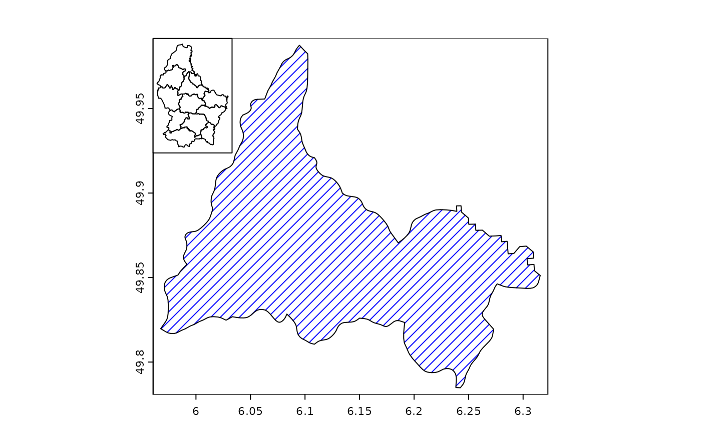
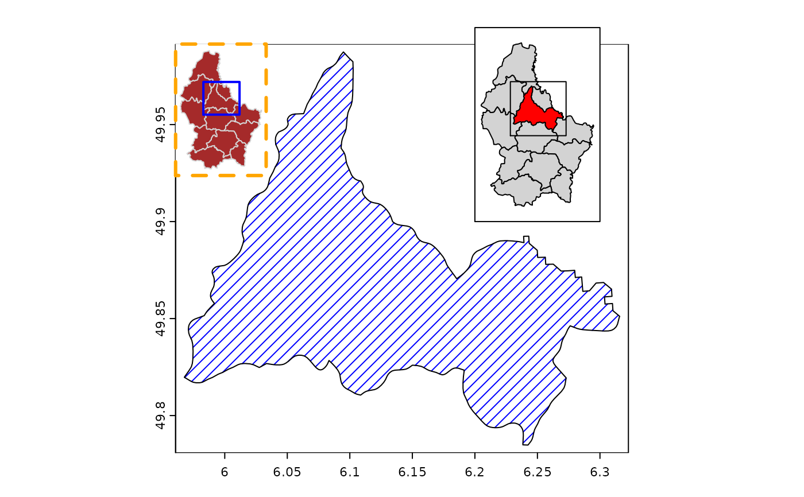
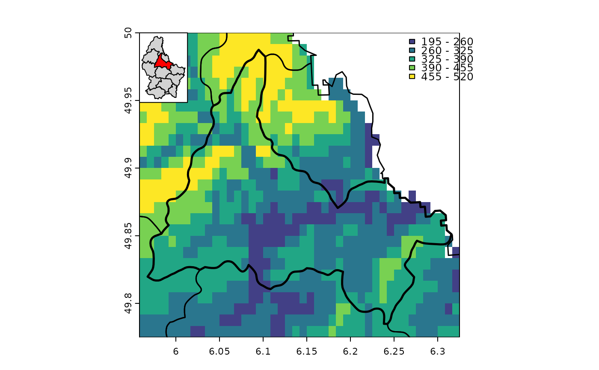
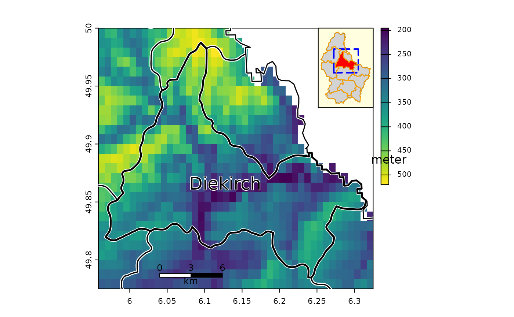

inset.RdMake an inset map or scale the extent of a SpatVector
# S4 method for SpatVector
inset(x, e, loc="", scale=0.2, background="white",
perimeter=TRUE, box=NULL, pper, pbox, ...)
# S4 method for SpatRaster
inset(x, e, loc="", scale=0.2, background="white",
perimeter=TRUE, box=NULL, pper, pbox, ...)
# S4 method for SpatVector
inext(x, e, y=NULL, gap=0)SpatVector, SpatRaster
SpatExtent to set the size and location of the inset. Or missing
character. One of "bottomright", "bottom", "bottomleft", "left", "topleft", "top", "topright", "right", "center"
numeric. The relative size of the inset, used when x is missing
color for the background of the inset. Use NA for no background color
logical. If TRUE a perimeter (border) is drawn around the inset
SpatExtent or missing, to draw a box on the inset, e.g. to show where the map is located in a larger area
list with graphical parameters (arguments) such as col and lwd for the perimeter line
list with graphical parameters (arguments) such as col and lwd for the box (line)
additional arguments passed to plot for the drawing of x
SpatVector. If not NULL, y is scaled based with the parameters for x. This is useful, for example, when x represent boundaries, and y points within these boundaries
numeric to add space between the SpatVector and the SpatExtent
scaled and shifted SpatVector or SpatRaster (returned invisibly)
f <- system.file("ex/lux.shp", package="terra")
v <- vect(f)
x <- v[v$NAME_2 == "Diekirch", ]
plot(x, density=10, col="blue")
inset(v)

# more elaborate
plot(x, density=10, col="blue")
inset(v, col = "brown", border="lightgrey", perimeter=TRUE,
pper=list(col="orange", lwd=3, lty=2),
box=ext(x), pbox=list(col="blue", lwd=2))
cols <- rep("light grey", 12)
cols[2] <- "red"
e <- ext(c(6.2, 6.3, 49.9, 50))
b <- ext(x)+0.02
inset(v, e=e, col=cols, box=b)

# with a SpatRaster
ff <- system.file("ex/elev.tif", package="terra")
r <- rast(ff)
r <- crop(r, ext(x) + .01)
plot(r, type="int", mar=c(2,2,2,2), plg=list(x="topright"))
lines(v, lwd=1.5)
lines(x, lwd=2.5)
inset(v, col=cols, loc="topleft", scale=0.15)

# a more complex one
plot(r, plg=list(title="meter\n", shrink=.2, cex=.8))
lines(v, lwd=4, col="white")
lines(v, lwd=1.5)
lines(x, lwd=2.5)
text(x, "NAME_2", cex=1.5, halo=TRUE)
sbar(6, c(6.04, 49.785), type="bar", below="km", label=c(0,3,6), cex=.8)
s <- inset(v, col=cols, box=b, scale=.2, loc="topright", background="light yellow",
pbox=list(lwd=2, lty=5, col="blue"))
# note the returned inset SpatVector
s
#> class : SpatVector
#> geometry : polygons
#> dimensions : 12, 6 (geometries, attributes)
#> extent : 6.255333, 6.321333, 49.93245, 49.99422 (xmin, xmax, ymin, ymax)
#> source : lux.shp
#> coord. ref. : lon/lat WGS 84 (EPSG:4326)
#> names : ID_1 NAME_1 ID_2 NAME_2 AREA POP
#> type : <num> <chr> <num> <chr> <num> <int>
#> values : 1 Diekirch 1 Clervaux 312 18081
#> 1 Diekirch 2 Diekirch 218 32543
#> 1 Diekirch 3 Redange 259 18664
lines(s, col="orange")
